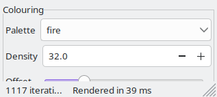
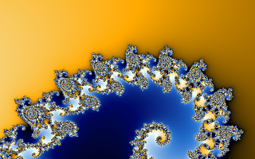
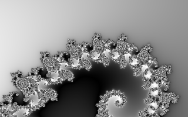
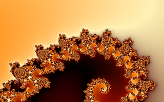
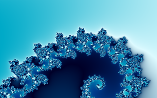
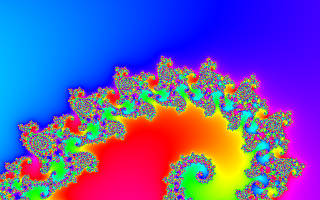
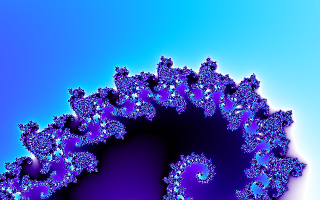

Points outside the set are coloured by how quickly they escaped, measured smoothly (fractional iteration counts, so there are no bands). That count, divided by the Density and shifted by the Offset, picks a position on the palette, which repeats as a cycle. Points inside the set are black.
Changing any of these recolours the picture at once, without recomputing it.
 |  |
| classic Try it | grayscale Try it |
 |  |
| fire Try it | ocean Try it |
 |  |
| rainbow Try it | electric Try it |
Try it: watch the offset run through one full cycle